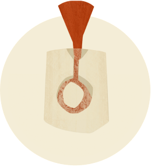
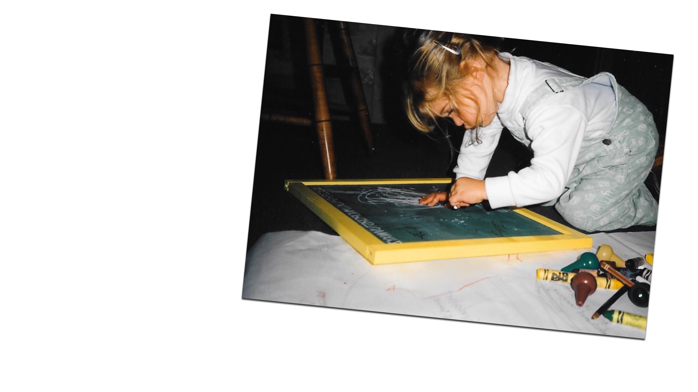
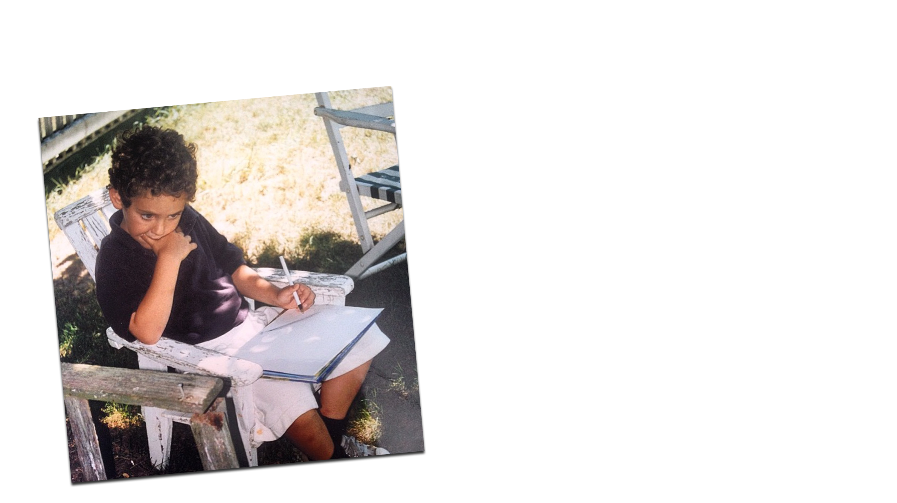
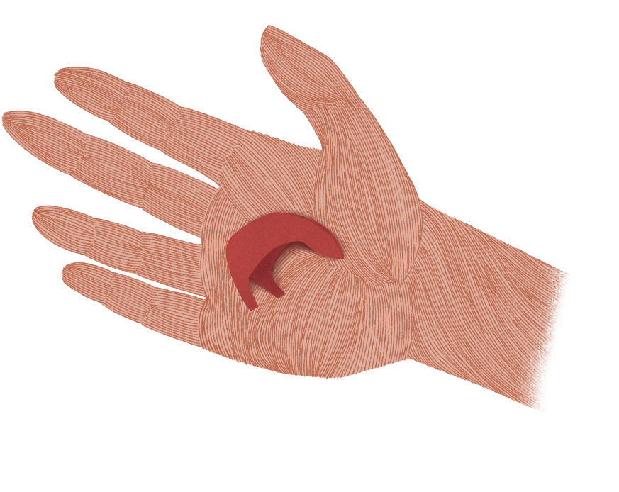

Our Story
Our Practice
Each piece begins as a sketch on paper. Next, the object is carved by hand — first in wax, then fine-tuned in metal. We work closely with a local foundry to cast the wax carvings in bronze, silver or gold. Each piece is then refined and polished in our studio.
If its path is to become a collection piece, a rubber mold is made so that we can make the children of that original and share them with you. If it's a custom piece, it is one of a kind.



Our History
Maçon is based in southern California, but Alex and Hannah met at RISD in 2008. They had figure drawing class together freshman year and quickly became close friends.
After graduating college, their resilient love for each other — despite gaps in distance and time — never waned. Eventually they found their way back to each other and married in 2023. Both Maçon and their union were born out of their desire to live and create as one.


We discover by holding.
Maçon was founded by two creative and life partners, Alex and Hannah. Their work is inspired by ancient artifacts and the intimate and personal objects they cared for when they were children.
